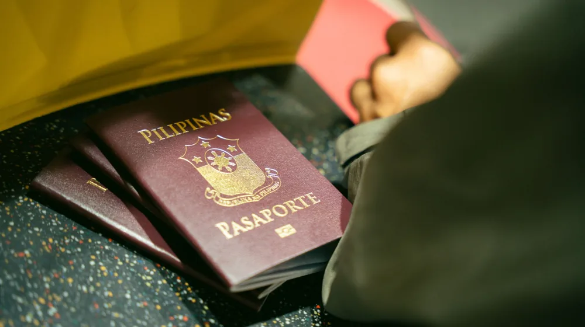

해외여행자보험, 이것 놓치면 손해! 내게 딱 맞는 가입 체크리스트 5가지
사진: Nataliya Vaitkevich / Pexels (무료 이미지, 출처 표기)
여행자보험, 왜 필수일까요?

해외여행은 언제나 설레지만, 예상치 못한 사건은 언제든 발생할 수 있습니다. 낯선 환경에서 갑작스러운 질병이나 상해를 입으면, 국내와는 차원이 다른 의료비 부담에 직면할 수 있습니다. 또한, 휴대품 분실, 파손, 항공기 지연이나 결항으로 인한 추가 비용 발생도 드물지 않습니다.
여행자보험은 이처럼 예측 불가능한 상황에서 발생하는 재정적 손실과 불편함을 최소화해주는 안전장치입니다. 단돈 몇만 원으로 수백만 원에 달할 수 있는 위험을 대비할 수 있어, 선택이 아닌 필수로 인식되고 있습니다.
나에게 맞는 보장 범위, 어떻게 선택할까?
여행자보험은 기본적으로 상해, 질병으로 인한 의료비 보장을 포함하며, 그 외 다양한 특약을 통해 보장 범위를 넓힐 수 있습니다. 본인의 여행 스타일과 예산을 고려하여 필요한 보장을 선택하는 것이 중요합니다.
- 상해/질병 의료비: 해외에서 발생한 의료비를 보장합니다. 국내에서 치료받은 경우에도 보장되는지 확인해야 합니다.
- 휴대품 손해: 캐리어, 카메라 등 소지품이 파손되거나 분실되었을 때 보상받습니다. 고가품이 많다면 보장 한도를 높이는 것을 고려하세요.
- 배상 책임: 타인의 신체나 재산에 손해를 입혔을 때 발생하는 법적 배상금을 보장합니다.
- 항공기 지연/결항: 항공편이 일정 시간 이상 지연되거나 결항되어 발생하는 추가 숙박비, 식사비 등을 보상합니다.
- 특별 비용: 조난 구조 비용, 사망 시 본국 송환 비용 등 비상 상황에 필요한 비용을 보장합니다.
각 보험사마다 세부 보장 내용과 한도가 다르므로, 여러 상품을 꼼꼼히 비교해보고 자신에게 필요한 보장이 충분한지 확인해야 합니다. 예를 들어, 익스트림 스포츠를 계획하고 있다면 관련 특약 가입을 고려해야 합니다.
가입 기간과 가격, 현명하게 비교하는 법
여행자보험은 일반적으로 가입 즉시 효력이 발생하며, 귀국 시점까지 유효합니다. 가입 기간은 출국일 0시부터 귀국일 24시까지로 정확하게 설정해야 합니다.
가격은 보험사, 가입 기간, 보장 내용, 연령 등에 따라 천차만별입니다. 대부분의 보험사는 온라인 가입 시 오프라인보다 저렴한 보험료를 제공합니다. 여러 보험사의 상품을 비교해주는 온라인 플랫폼을 활용하면 각 상품의 보장 내용과 보험료를 한눈에 비교할 수 있어 시간을 절약할 수 있습니다.
가족 단위 여행이라면 개별 가입보다 '가족형 보험'이 더 유리할 수 있습니다. 2024년 6월 기준, 주요 손해보험사 웹사이트에서 직접 보험료를 계산하고 비교할 수 있습니다. 정확한 보험료와 보장 내용은 가입하려는 보험사의 공식 웹사이트를 통해 다시 한번 확인하시길 권장합니다.
이것만은 꼭 확인하세요! 특약 및 면책 조항
여행자보험 가입 시, '특약'과 '면책 조항'은 반드시 숙지해야 할 중요한 부분입니다. 특약은 기본 보장 외에 추가로 선택할 수 있는 보장을 의미하며, 면책 조항은 보험금을 지급하지 않는 예외 상황을 명시합니다.
- 면책 조항: 보험사가 보험금을 지급하지 않는 조건들을 말합니다. 일반적으로 다이빙, 패러글라이딩 등 고위험 스포츠 활동 중 발생한 사고, 음주나 무면허 운전 중 발생한 사고, 기존 질병의 악화, 자살, 전쟁 및 테러로 인한 손해 등은 면책 조항에 해당할 수 있습니다. 여행 계획에 고위험 활동이 포함되어 있다면 반드시 관련 특약 가입 여부를 확인해야 합니다.
- 자기부담금: 보험금 청구 시 피보험자(보험 가입자)가 직접 부담해야 하는 일정 금액을 의미합니다. 자기부담금이 낮을수록 보험료는 비싸지고, 높을수록 보험료는 저렴해집니다.
- 가입 제한 및 제외 국가: 일부 국가는 여행자보험 가입이 제한되거나 특정 보장에서 제외될 수 있습니다. 여행 계획이 확정되면 방문 국가가 보험 적용 대상에 포함되는지 사전에 확인해야 합니다.
약관을 꼼꼼히 읽어보고 본인의 여행 계획에 맞는 특약을 추가하거나, 면책 조항으로 인해 보장받지 못하는 상황이 생기지 않도록 미리 대비하는 것이 중요합니다.
여행자보험 가입, 실제 절차와 사고 시 대처
여행자보험 가입 절차는 매우 간단합니다. 대부분의 보험사는 온라인을 통해 몇 분 안에 가입을 완료할 수 있도록 시스템을 갖추고 있습니다.
- 보험사/비교 사이트 접속: 원하는 보험사의 공식 웹사이트나 여러 보험사를 비교해주는 플랫폼에 접속합니다.
- 정보 입력: 여행 국가, 여행 기간, 생년월일, 성별 등 기본 정보를 입력합니다.
- 보장 선택: 필수 보장과 필요한 특약을 선택하여 자신에게 맞는 상품을 구성합니다.
- 보험료 결제: 선택한 보장 내용에 따라 산출된 보험료를 결제합니다.
- 보험 증권 수령: 가입 완료 후 이메일이나 모바일 앱으로 보험 증권을 수령합니다. 해외에서도 확인 가능하도록 인쇄본을 준비하거나 파일 형태로 보관해두는 것이 좋습니다.
만약 해외에서 사고가 발생했다면, 당황하지 않고 다음 절차를 따르는 것이 중요합니다. 현지 경찰서 신고서, 병원 진단서 및 영수증, 항공사 지연/결항 증명서 등 사고 발생을 증명할 수 있는 서류를 현지에서 최대한 확보해야 합니다. 귀국 후에는 지체 없이 보험사에 연락하여 보험금을 청구해야 합니다. 2024년 6월 기준, 각 보험사 및 금융감독원 웹사이트에서 보험금 청구에 필요한 서류와 절차에 대한 최신 정보를 확인할 수 있습니다.
🔗 이 글도 함께 보면 좋아요: 전세자금대출, 까다로운 조건도 한눈에! 나에게 맞는 최대 한도 확인법